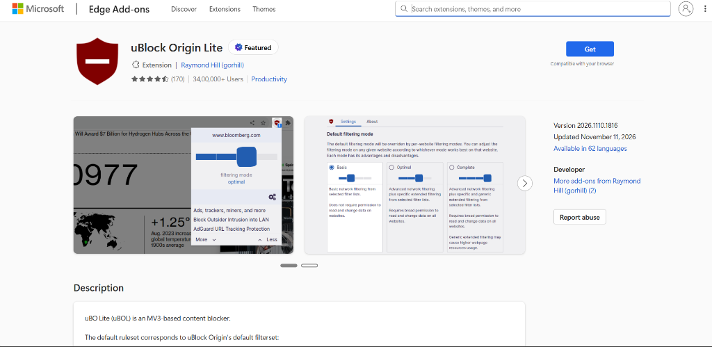
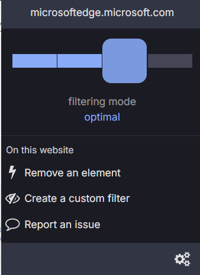
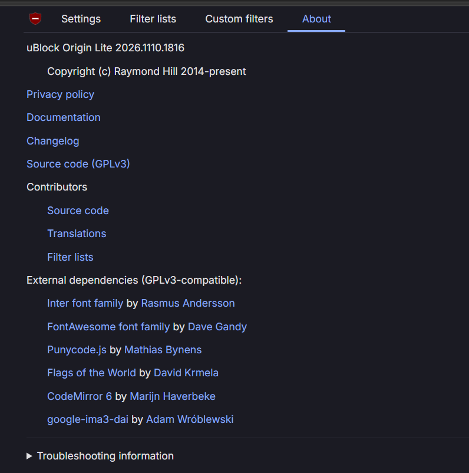
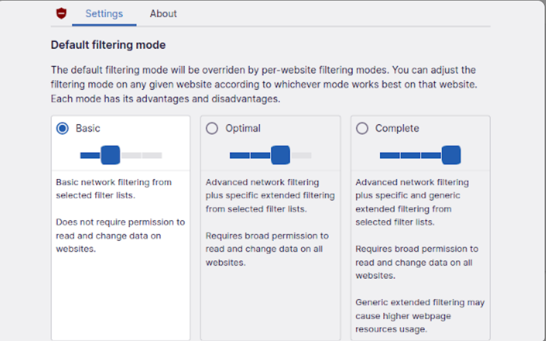
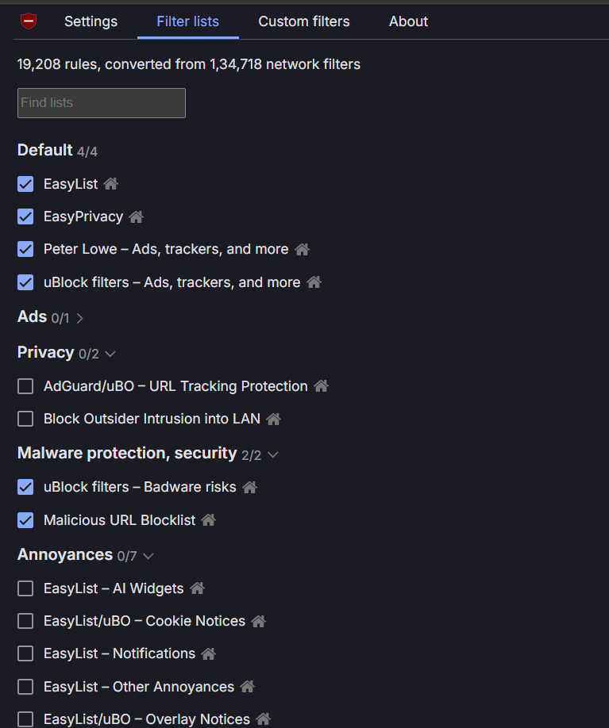
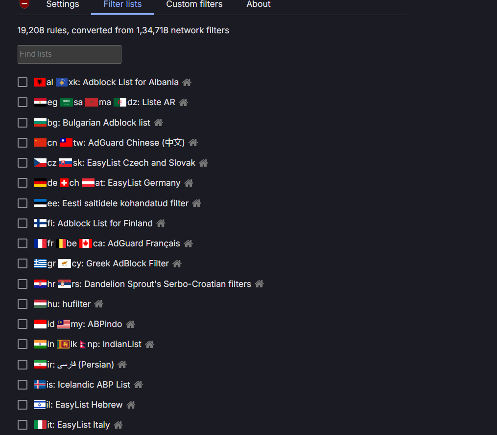
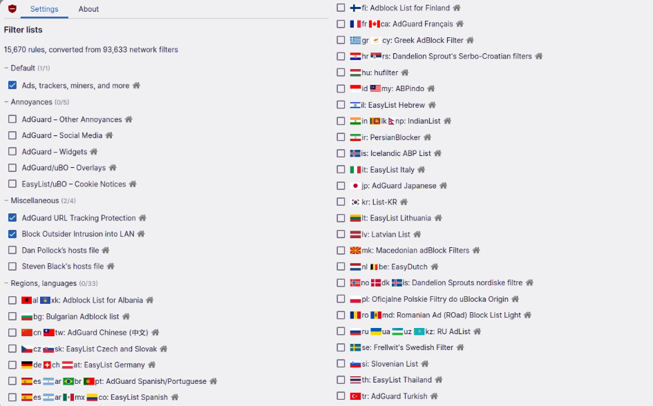
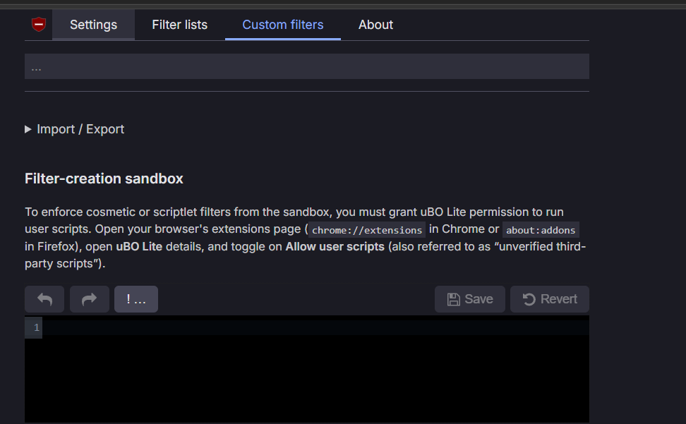
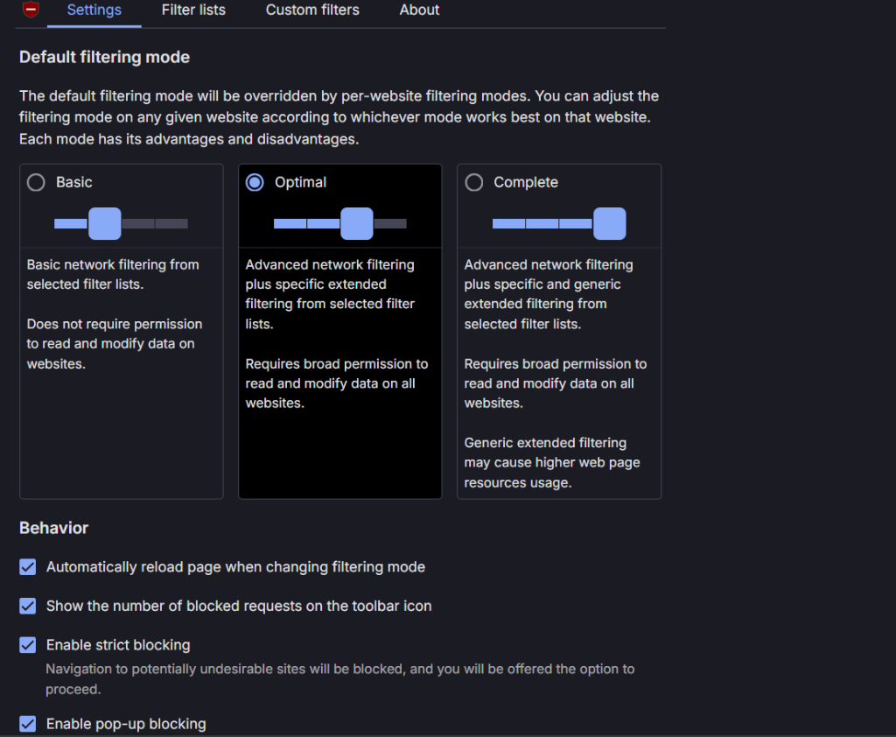

uBlock Origin Lite (and uBlock Origin) is the gold standard of open-source content blockers, created by Raymond Hill (gorhill). Unlike commercial adblockers that sell user browsing habits or operate paid "Acceptable Ads" whitelists, uBlock is completely free, community-driven, and non-commercial.

Official Browser Store Page (Edge / Chrome / Firefox)

Toolbar Quick Popup & Zapper
Figure 3.1: Extension store installation and toolbar popup. Over 3.4 million users rely on uBO Lite for efficient Manifest V3 content blocking. Pin the shield icon to your toolbar for instant per-site controls.
Installation and initial toolbar setup:
- Visit your browser's official store (Edge Add-ons, Chrome Web Store, or Firefox Add-ons) and search for uBlock Origin Lite or uBlock Origin. Verify the author is Raymond Hill (gorhill) to avoid fraudulent third-party clones.
- Click Get or Add to Browser. When prompted, confirm the installation.
- Click your browser's puzzle icon, find uBlock, and pin it to your toolbar.
- Inspect the Toolbar Popup: Click the shield icon on any website. Notice the intuitive 3-position slider (Basic, Optimal, Complete), the ⚡ Remove an element lightning bolt tool, and the gear icon in the bottom corner to open full settings.
uBlock Origin Lite introduces transparent, permission-based filtering modes, giving students fine-grained control over the tradeoff between strict privacy isolation and cosmetic ad removal.

Optimal Mode & Strict Blocking Settings

Permission Transparency (Basic vs. Optimal)
Figure 3.2: Filtering mode selection. Choose between Basic (zero site read permissions) and Optimal (recommended for clean academic browsing without blank spaces).
How to configure your default filtering mode:
- Click the gear icon in the popup to enter the Settings dashboard.
- Select the mode that matches your study preference:
- Basic Mode: Network-level blocking only. Does not require permission to read or modify data on websites. Ideal for extreme privacy purists.
- Optimal Mode (Recommended): Advanced network filtering plus specific extended cosmetic filtering. Strips empty blank spaces and collapsed ad banners for clean page layouts.
- Complete Mode: Maximally aggressive generic cosmetic rules, recommended when researching on ad-heavy academic repositories or forum sites.
- Under Behavior, ensure both "Enable strict blocking" (warns you before navigating to shady redirect loops) and "Enable pop-up blocking" are checked.
Under the hood, uBlock Origin compiles over 134,000 community-maintained rules into an ultra-fast compiled ruleset of 19,000+ active filters.

Core Default Lists & Malware Protection

Regional Lists: IndianList (in, lk, np)
Figure 3.3: Filter list configuration. Enable core protection and regional lists (such as IndianList) to eliminate localized university portal banners and local spam networks.
Recommended student filter list selections:
- Switch to the Filter lists tab in the dashboard.
- Confirm all 4 Default lists are enabled: EasyList, EasyPrivacy, Peter Lowe – Ads, trackers, and uBlock filters.
- Under Malware protection, security, ensure both uBlock filters – Badware risks and Malicious URL Blocklist are active to defend against rogue downloads on textbook download portals.
- Scroll to Regions, languages and check in, lk, np: IndianList (if studying in South Asia) or your relevant regional list to clean local advertisements on university student forums.
Nothing shatters academic reading momentum faster than full-screen cookie consent banners, floating newsletter overlays, and forced AI chatbot widgets that hover over technical documentation.

Annoyances & Tracking Protection: Strip AI Widgets, Cookie Notices & Overlay Overkill
Figure 3.4: Annoyance filter categories. Automatically suppress GDPR cookie walls, floating AI sidebars, and URL tracking parameters.
How to banish distracting web clutter:
- In the Filter lists tab, locate the Annoyances category and check:
- EasyList/uBO – Cookie Notices: Silently bypasses and dismisses cookie banners without clicking "Accept All".
- EasyList – AI Widgets: Blocks intrusive AI chatbots and automatic summarizer popups that obscure study articles.
- AdGuard – Social Media & Widgets: Strips floating like/share widgets, discussion overlays, and viral recommendation sidebars.
- Under Miscellaneous, check AdGuard URL Tracking Protection to strip tracking tags (like
⏱utm_source=... or Facebook fbclid) from web links, keeping your browser history clean.
When a specific website has an element you cannot tolerate—such as YouTube Shorts reels, clickbait comment sections, or sticky headers that consume half your laptop screen—use uBlock's built-in element zapper and custom filter sandbox.

Custom Filters Sandbox: CodeMirror Editor & Scriptlet Enforcement
Figure 3.5: The Custom filters sandbox. Write cosmetic CSS rules to permanently zap algorithmic distraction elements from any learning site.
Two ways to zap distracting elements:
- The Visual Zapper (Instant Temporary): Click the uBlock toolbar shield, select ⚡ Remove an element, and click directly on the distracting box (such as a floating video player). It disappears instantly from your current session.
- Permanent Custom Filter (The YouTube Shorts Exterminator): Open the Custom filters tab. Type your cosmetic rules into the CodeMirror editor and tap Save:
! Permanently remove YouTube Shorts shelf from home feed
youtube.com##ytd-rich-shelf-renderer[is-shorts]
! Remove Shorts button from YouTube sidebar
youtube.com##[title="Shorts"]
! Remove distracting YouTube comment section under lectures
youtube.com###comments
- Permission Tip: To enforce advanced cosmetic scriptlets, visit your browser extensions settings (
chrome://extensions or edge://extensions) and toggle on Allow user scripts for uBO Lite.
Your browser is now transformed into a calm, focused reading environment with zero commercial ad-tech surveillance.

About Tab: Verified GNU General Public License v3 (GPLv3) by Raymond Hill
Figure 3.6: Open-source authenticity. uBlock Origin Lite is guaranteed 100% Free and Open Source Software (GPLv3) with zero commercial tracking dependencies.
Why this matters for students:
- GPLv3 License Verification: Switch to the About tab to confirm the project license. uBlock Origin is open-source non-profit software governed by the GNU General Public License v3, ensuring that your privacy is protected by open code inspection.
- Cognitive and Hardware Benefits: By blocking bloated tracking scripts, autoplay videos, and animated GIF banners, technical documentation pages load up to 400% faster. Your laptop fan stays quiet, memory usage stays low, and your battery lasts hours longer in the university library.